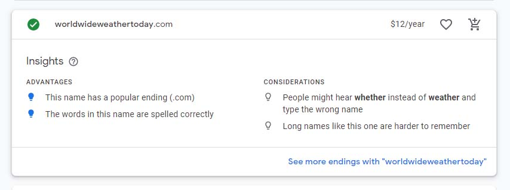

Site Plan
Site Name
I wanted to find a name that explained the purpose of the site just in the name. I started with worldwideweathernow, but realized that was too specific if you were looking for more than just a minute by minujte weather forcast. So I settled on WorldWide Weather Today WWW today
Site Purpose
This is a website that can show the weather around the world, in real time. You can use it based on your current location, zip code lookup or favorite locations. It is an excellent resource for daily life as well as travel preparation, checking on family members and friends in other locations and to be up to date on all weather alerts in an area.